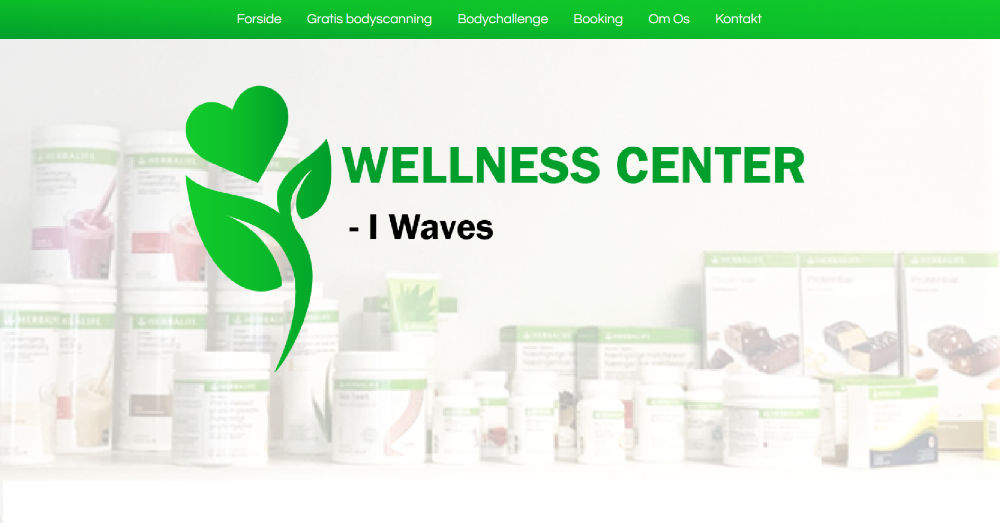
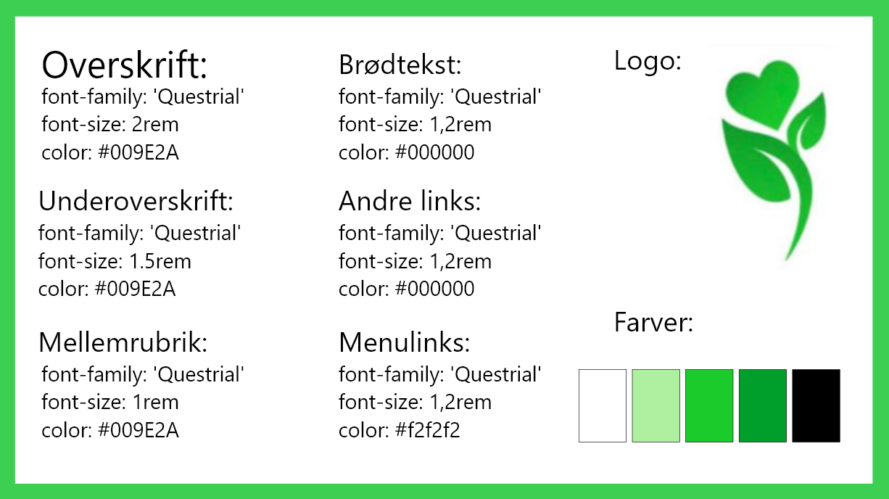
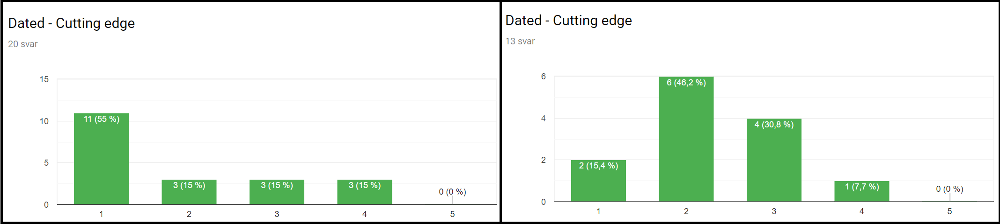
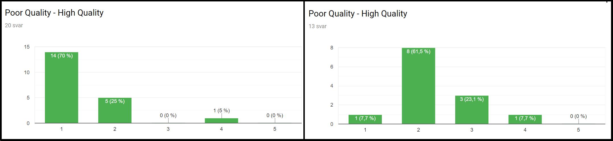
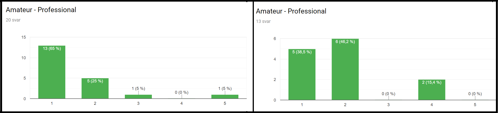
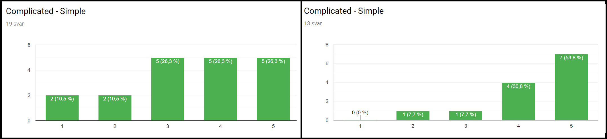
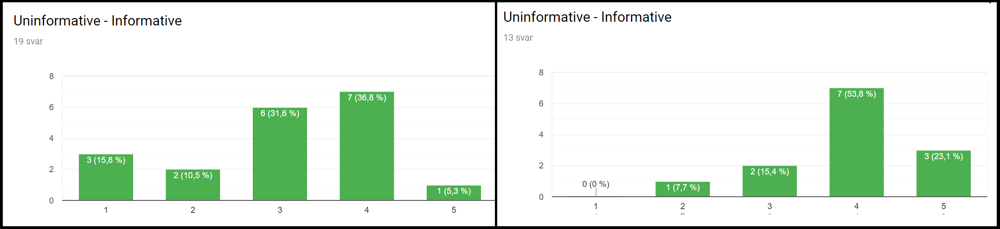
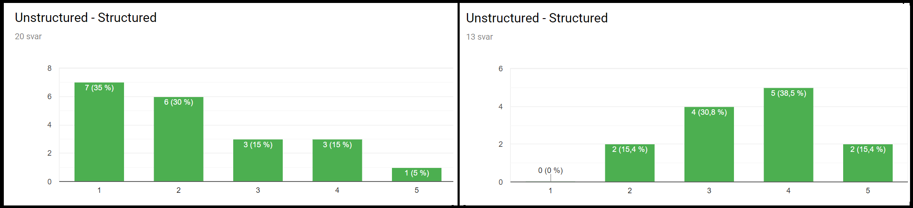
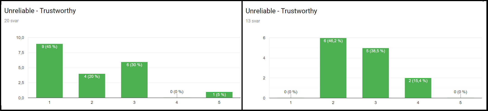

Tema 03 Grundlæggende Indhold
03.05.03 redesign
Værktøjer brugt
Link til NYT redesign
Bruger: kea
Kode: kea
Kan ses her: Link
Link til Bert-test
for originalsiden, kan ses her: Link
for første redesign, kan ses her: Link
Design dokumentation
Wellnesscenter i Waves

Styletile

Moodboard

Bert Test - Original side VS Første redesign
Dated - Cutting edge

Poor quality - High quality

Amateur - Professional

Complicated - Simple

Uninformative - Informative

Unstructured - Structured

Unreliable - Trustworthy
